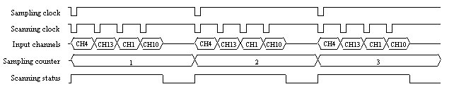
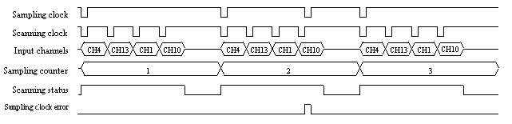
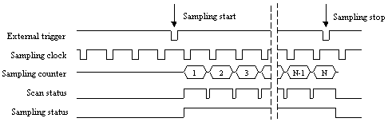
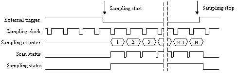
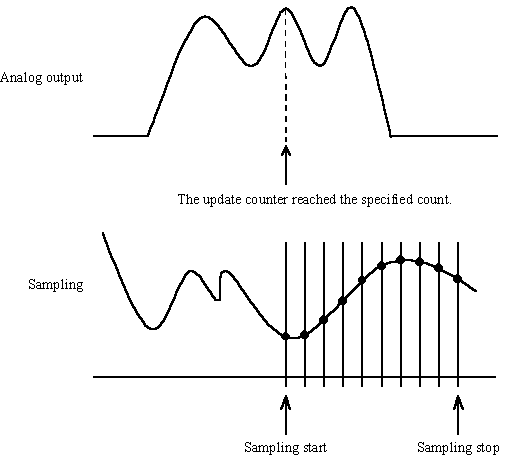
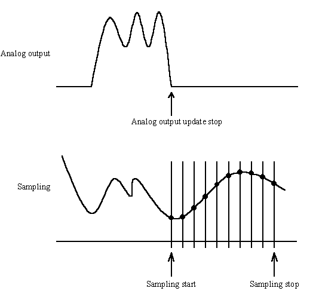
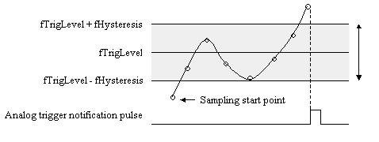
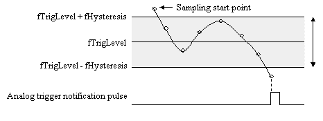

The ADBMSAMPLREQ structure configures sampling conditions
for the samplings specified by the AdBmSetSamplingConfig function.- C
ULONG ulChCount;
ADSMPLCHREQ SmplChReq[256];
ULONG ulSingleDiff;
ULONG ulSmplNum;
ULONG ulSmplEventNum;
ULONG ulSmplRepeat;
ULONG ulBufferMode;
float fSmplFreq;
float fScanFreq;
ULONG ulStartMode;
ULONG ulStopMode;
ULONG ulPreTrigDelay;
ULONG ulPostTrigDelay;
ADTRIGCHREQ TrigChReq[2];
ULONG ulATrgMode;
ULONG ulATrgPulse;
ULONG ulStartTrigEdge;
ULONG ulStopTrigEdge;
ULONG ulTrigDI;
ULONG ulEClkEdge;
ULONG ulFastMode;
ULONG ulStatusMode;
ULONG ulErrCtrl;
} ADBMSMPLREQ, *PADBMSMPLREQ
- Visual Basic
Type ADBMSMPLREQ
ulChCount As Long
SmplChReq(0 To 255) As ADSMPLCHREQ
ulSingleDiff As Long
ulSmplNum As Long
uSmplEventNum As Long
uSmplRepeat As Long
uBufferMode As Long
fSmplFreq As Single
fScanFreq As Single
ulStartMode As Long
ulStopMode As Long
ulPreTrigDelay As Long
ulPostTrigDelay As Long
TrigChReq(0 To 1) As ADTRIGCHREQ
ulATrgMode As Long
ulATrgPulse As Long
ulStartTrigEdge As Long
ulStopTrigEdge As Long
ulTrigDI As Long
ulEClkEdge As Long
ulFastMode As Long
ulStatusMode As Long
ulErrCtrl As Long
End Type
- Delphi
type
ADBMSMPLREQ = record
ulChCount: Cardinal;
SmplChReq: array[0..255] of ADSMPLCHREQ;
ulSingleDiff : Cardinal;
ulSmplNum: Cardinal;
ulSmplEventNum : Cardinal;
ulSmplRepeat : Cardinal;
ulBufferMode : Cardinal;
fSmplFreq: Single;
fScanFreq: Single;
ulStartMode : Cardinal;
ulStopMode: Cardinal;
ulPreTrigDelay: Cardinal;
ulPostTrigDelay: Cardinal;
TrigChReq: array[0..1] of ADTRIGCHREQ;
ulATrgMode : Cardinal;
ulATrgPulse : Cardinal;
ulStartTrigEdge: Cardinal;
ulStopTrigEdge: Cardinal;
ulTrigDI: Cardinal;
ulEClkEdge : Cardinal;
ulFastMode : Cardinal;
ulStatusMode : Cardinal;
ulErrCtrl : Cardinal;
end;
Member
Description
ulChCount Specifies the number of channels to sample. It is in the range of 1 through the number of channels that the board/card provides.(*1) The default setting value is 1. Specifies the channel numbers in the ADSMPLCHREQ structure.
The default setting is 1.SmplChReq Specifies an array of the ADSMPLCHREQ structure containing the sampling conditions for the channel. ulSingleDiff Specifies the data transfer mode.
Select either one of the codes for ulSingleDiff.The default setting is dependent on the board/card. It is retrieved by calling the AdGetSamplingConfig function after the board/card is opened.
Code Value Description AD_INPUT_SINGLE 1 Single-ended input AD_INPUT_DIFF 2 Differential input ulSmplNum Specifies the number of samples per channel from 1 through the non-page area size.(*2)
The default setting value is 1024. Actual upper limit is dependent on your system.ulSmplEventNum Specifies the event interval according to the number of samples to notify the event. Each event is notified whenever the number of acquired samples reaches to multiples of the number specified by this member. The default setting value is 0. ulSmplRepeat Specifies the repetitions of sampling from 1 through 65535.(*3)(*9)
Under the trigger conditions that are specified by ulStartMode and/or ulStopMode, sampling is repeated the number of times specified by ulSmplRepeat. When you specify 0, the samplings repeats until the AdStopSampling function is called or the buffer becomes full.
The default setting value is 1.ulBufferMode Specifies how to store sampling data into the buffer in the repetition sampling mode.(*4)
Specifies either one from the following codes for ulBufferMode.
Code Value Description AD_APPEND 1 Adds new data at the end of the buffer. (default setting) AD_OVERWRITE 2 Overwrites new data on existing data. fSmplFreq Specifies the sampling rate in Hz. You can specify this from 0.48f to the maximum sampling rate that the board/card provides.(*1) To use the external clock, please specify 0.0f. To use counter upward/downward clock, please specify -1. (*11)
The external clock input pin is dependent on the board/card. Refer to "Attentions" for more details.
If you use the external clock in PCI-3525, CTP/CPZ-3525, change the CN3 or CN4 pins to EXCLK_IN pin by AdSetFunction function.
If you use the external clock in LPC/PEX-320724, change the CN3 pin to EXCLK_IN pin by the AdSetFunction function.
If you use the external clock in PCI-361812, change the pin to EXCLK_IN pin by the AdSetFunction function.
The default differs dependent on the board/card.
The default value is obtained by executing the AdBmGetSamplingConfig function just after opening the device.fScanFreq Specifies the scanning rate in Hz.You can specify this from 0.48f to the maximum scanning rate that the board/card supports. (*1)
Note: This member has no meaning for the following boards/cards.PCI-3525
LPC-320724, LPC-321012,LPC-321316, LPC-321416, LPC-361316, LPC-361416
PCI-361812
PEX-320724、PEX-321012, PEX-321316, PEX-321416, PEX-361316, PEX-361416
CTP/CPZ-3167, CTP/CPZ-3525
CBI-3133A, CBI-3133B, CBI-3134A, CBI-3134B,
CSI/CBI-320212, CBI-320212TR, CBI-320212TK, CBI-320212TL,
CSI/CBI-320312, CBI-320312TR, CBI-320312TK, CBI-320312TLThe default setting value differs depending on the board/card. the default value cab be retrieved by calling the AdBmGetSamplingConfig function after the board/card is opened.
ulStartMode Specifies the start condition of sampling (start-trigger). The external trigger input pin is dependent on the board/card. Refer to "Attentions" for more details. One or more codes can be specified(*5)
If you use the external clock in PCI-3525, CTP/CPZ-3525, change the CN3 or CN4 pins to EXCLK_IN pin by AdSetFunction function.
If you use the external clock in LPC/PEX-320724, change the CN3 pin to EXCLK_IN pin by the AdSetFunction function.
If you use the external clock in PCI-361812, change the pin to EXCLK_IN pin by the AdSetFunction function.
Code Value Description AD_FREERUN 1 No trigger (default setting) AD_EXTTRG 2 External trigger AD_EXTTRG_DI 3 External trigger with mask using a digital input pin AD_START_P1 00000010h Level 1 low-to-high transition AD_START_M1 00000020h Level 1 high-to-low transition AD_START_D1 00000040h Level 1 low-to-high transition or high-to-low transition AD_START_P2 00000080h Level 2 low-to-high transition AD_START_M2 00000100h Level 2 high-to-low transition AD_START_D2 00000200h Level 2 low-to-high transition or high-to-low transition The following codes are supported by only the PCI-3525 and CTP/CPZ-3525.(*8)
ulStartMode and ulStopMode cannot be set to the same condition.
Code
Value Description AD_START_SIGTIMER 11 Interval timer AD_START_DA_START 12 Digital-to-Analog output start by the DaStartSampling function. AD_START_DA_STOP 13 Digital-to-Analog output stop by the DaStartSampling function. AD_START_DA_IO 14 Digital-to-Analog output DA by the DaOutputDA function. AD_START_DA_SMPLNUM 15 The specified number of samples has been output by the DaStartSampling function. The following start trigger condition is applicable to the LPC-321012, PEX-321012, LPC-320724, PEX-320724, PCI-361812. (*8)
ulStartMode and ulStopMode cannot be set to the same condition.
Code Value Discription AD_START_SIGTIMER 11 Interval timer The following start trigger condition is applicable to the following models.
PCI-320412, PCI-320416, PCI-360116, PCI-360112, PCI-360216, PCI-320416
LPC-321116, LPC-321216, LPC-321316, LPC-321416, LPC-361116, LPC-361216, LPC-361316, LPC-361416
PEX-321116, PEX-321216, PEX-321316, PEX-321416, PEX-361116, PEX-361216, PEX-361316, PEX-361416
CTP/CPZ-360116, CTP/CPZ-360112
CSI/CBI-320412, CBI-320412TR, CBI-320412TK, CBI-320412TL,
CSI/CBI-320416, CBI-320416TR, CBI-320416TK, CBI-320416TL,
CSI/CBI-360112, CBI-360112TR, CBI-360112TK, CBI-360112TL,
CSI/CBI-360116, CBI-360116TR, CBI-360116TK, CBI-360116TL. (*10)(*12)
Code Value Description AD_START_CNT_EQ 00020000h Counter detection AD_START_Z_CLR 00400000h Phase Z input ulStopMode Specifies the stop condition of sampling (stop-trigger). The terminal for external trigger is dependent on the board/card. Refer to "Attentions" for more details. One or more codes can be specified.(*5) If you use the external clock in PCI-3525, CTP/CPZ-3525, change the CN3 or CN4 pins to EXCLK_IN pin by AdSetFunction function.
If you use the external clock in LPC/PEX-320724, change the CN3 pin to EXCLK_IN pin by the AdSetFunction function.
If you use the external clock in PCI-361812, change the pin to EXCLK_IN pin by the AdSetFunction function.
Code Value Description AD_FREERUN 1 No trigger (default setting) AD_EXTTRG 2 External trigger AD_EXTTRG_DI 3 External trigger with mask using a digital input pin AD_ETERNITY 9 Infinite sampling(*6) AD_SMPLNUM 10 Sampling counter(*2) AD_STOP_P1 00000400h Level 1 low-to-high transition AD_STOP_M1 00000800h Level 1 high-to-low transition AD_STOP_D1 00001000h Level 1 low-to-high transition or high-to-low transition AD_STOP_P2 00002000h Level 2 low-to-high transition AD_STOP_M2 00004000h Level 2 high-to-low transition AD_STOP_D2 00008000h Level 2 low-to-high transition or high-to-low transition The following codes are supported by only the PCI-3525, CTP/CPZ-3525.(*8)
The same conditions cannot be set to ulStartMode and ulStopMode
Code Value Description AD_STOP_DA_START 12 Digital-to-Analog output start by the DaStartSampling function AD_STOP_DA_STOP 13 Digital-to-Analog output stop by the DaStartSampling function AD_STOP_DA_IO 14 Digital-to-Analog output by the DaOutputDA function AD_START_DA_SMPLNUM 15 The specified number of samples has been outputted by the DaStartSampling function. The following start trigger condition is applicable to the following models.
PCI-320412, PCI-320416, PCI-360116, PCI-360112, PCI-360216, PCI-320416
LPC-321116, LPC-321216, LPC-321316, LPC-321416, LPC-361116, LPC-361216, LPC-361316, LPC-361416
PEX-321116, PEX-321216, PEX-321316, PEX-321416, PEX-361116, PEX-361216, PEX-361316, PEX-361416
CTP/CPZ-360116, CTP/CPZ-360112
CSI/CBI-320412, CBI-320412TR, CBI-320412TK, CBI-320412TL,
CSI/CBI-320416, CBI-320416TR, CBI-320416TK, CBI-320416TL,
CSI/CBI-360112, CBI-360112TR, CBI-360112TK, CBI-360112TL,
CSI/CBI-360116, CBI-360116TR, CBI-360116TK, CBI-360116TL
(*10)(*12)
Code Value
Description AD_STOP_CNT_EQ 00040000h
Counter detection AD_STOP_Z_CLR 00800000h
Phase Z input
The following stop trigger conditions are applicable to only to the PCI-321516.
Code Value
Description AD_STOP_CNT_EQ 00040000h
Counter detection AD_STOP_Z_CLR 00800000h
Phase Z input
ulPreTrigDelay Specifies the number of pre-trigger samples from 1 through 1073741824. This member is available when you specify other than AD_FREERUN in ulStartMode.(*3)
When you specify 0, the pre-trigger delay is not used. The default setting value is 0.ulPostTrigDelay Specifies the number of post-trigger delay samples in the range from 1024 through 262144 every 1024 samples. For the PCI-3525 and CTP/CPZ-3525, specifies the number of post-trigger delay samples in the range from 1 through 16777216 every sample. For the
LPC-321316, LPC-321416, LPC-361316, LPC-361416
PEX-321316, PEX-321416, PEX-361316, PEX-361416
CBI-3133A, CBI-3133B, CBI-3134A, CBI-3134B,
CSI/CBI-320212, CBI-320212TR, CBI-320212TK, CBI-320212TL,
CSI/CBI-320312, CBI-320312TR, CBI-320312TK, CBI-320312TL, specifies the post trigger delay samples in the range from 1 through 65536 every sample.
This member is not available when you specify AD_FREERUN in ulStopMode. When you specify 0, the post-trigger delay is not used.
The default setting value is 0.TrigChReq Specifies an array of the ADTRIGCHREQ structure to set the analog trigger conditions. This member is available when the analog trigger is specified to ulStartMode, ulStopMode, or ulATrgMode.
Array Element Description TrigChReq[0] Trigger level 1 TrigChReq[1] Trigger level 2 ulATrgMode Specifies the pulse output condition by analog trigger notification. ulATrgMode combine the pulse output codes and specifies them. AD_DISABLE cannot be specified with other codes. This member is applicable to boards/cards that have analog trigger notification pulse function.
For PCI-321516, this member specifies the internal synchronous trigger output conditions.
Code Value Description AD_DISABLE 80000000h No pulse output (default setting) AD_EDGE_P1 0010h Level 1 low-to-high transition AD_EDGE_M1 0020h Level 1 high-to-low transition AD_EDGE_D1 0040h Level 1 low-to-high transition or high-to-low transition AD_EDGE_P2 0080h Level 2 low-to-high transition AD_EDGE_M2 0100h Level 2 high-to-low transition AD_EDGE_D2 0200h Level 2 low-to-high transition or high-to-low transition ulATrgPulse Specifies the pulse polarity of the analog trigger.
This member is applicable to boards/cards that have analog trigger notification pulse function.
Code Value Description AD_LOW_PULSE 1 Negative pulse (default setting) AD_HIGH_PULSE 2 Positive pulse ulStartTrigEdge Specifies the edge polarity of the external trigger.(*7)
This member is available when the trigger mode is the external trigger or external trigger with mask using a digital input pin.
Code Value Description AD_DOWN_EDGE 1 Falling edge (default setting) AD_UP_EDGE 2 Rising edge ulStopTrigEdge Specifies the edge polarity of the external trigger.(*7)
This member is available when the trigger mode is the external trigger or external trigger with mask using a digital input pin.
Code Value Description AD_DOWN_EDGE 1 Falling edge (default setting) AD_UP_EDGE 2 Rising edge ulTrigDI Selects a single digital input pin to be used with the trigger conditions. While the status of the digital input pin is low, the assertion of the external trigger is valid. The number of digital input pins available for mask settings depends on the board/card specifications. This member is available when the trigger mode is the external trigger with mask using a digital input pin. The format of ulTrigDI is the same as digital input data. Please refer to "Data Format." The default setting value is 1. ulEClkEdge Specifies the edge polarity of the external clock signal. This member is available when 0.0f is set to fSmplFreq.
Code Value Description AD_DOWN_EDGE 1 Falling edge (default setting) AD_UP_EDGE 2 Rising edge ulFastMode Specifies the operation clock mode. This member is applicable to double-clocked mode.
Code Value Description AD_NORMAL_MODE 1 Normal mode (default setting) AD_FAST_MODE 2 Double-clocked mode ulStatusMode Specifies the additional status to the sampling data. This member is available for boards/cards that support the bus master sampling status mode. Please refer to "Data Format."
Code Value Description AD_NO_STATUS 1 Adds no bus master sampling status (default setting). AD_ADD_STATUS 2 Adds bus master sampling status. ulErrCtrl Specifies the process when the sampling error occurs.
Specifies the following codes for ulErrCtrl. AD_FREERUN cannot used with the other codes.
Code Value Description AD_FREERUN 1 Continues the sampling even if any errors occur. (default setting) AD_STOP_SCER 2 Stops sampling because of a sampling clock error.(*1) AD_STOP_ORER 4 Stops sampling because of an overrun error.
*1 You need to meet the following condition when you use the internal clock.
fSmplFreq * ulChCount <= fScanFreq
(The sampling channels can be specified arbitrary order.)

A sampling clock error occurs if a sampling clock pulse is detected while channels are scanning. The event occurs with the sampling clock error. If you specify AD_STOP_SCER to ulErrCtrl, sampling is stopped by the scanning clock error.

*2 Specify ulSmplNum from 1024 through 67108864 of every 1024 samples if you specify AD_SMPLNUM to ulStopMode.
Specify in the range from 1 through 16777216 for thePCI-3525, PCI-320112, PCI-320412, PCI-320416, PCI-360116, PCI-360112, PCI-360216, PCI-321516
LPC-320724, LPC-321012, LPC-321116, LPC-321216, LPC-321316, LPC-321416, LPC-361116, LPC-361216, LPC-361316, LPC-361416
PEX-320724, PEX-321012, 321116, PEX-321216, PEX-321316, PEX-321416, PEX-361116, PEX-361216, PEX-361316, PEX-361416
PCI-361812
CTP/CPZ-3167, CTP/CPZ-3183, CTP/CPZ-3525, CTP/CPZ-360112, CTP/CPZ-360116, CTP/CPZ-320412, CTP/CPZ-320416
CBI-3133A, CBI-3133B,CBI-3134A, CBI-3134B,
CSI/CBI-320212, CBI-320212TR, CBI-320212TK, CBI-320212TL, CSI/CBI-320312, CBI-320312TR, CBI-320312TK, CBI-320312TL,
CSI/CBI-320412, CBI-320412TR, CBI-320412TK, CBI-320412TL, CSI/CBI-320416, CBI-320416TR, CBI-320416TK, CBI-320416TL,
CSI/CBI-360112, CBI-360112TR, CBI-360112TK, CBI-360112TL, CSI/CBI-360116, CBI-360116TR, CBI-360116TK, CBI-360116TL.
When specifying ADFREERUN for ulStopMOde on the following boards/cards, specify ulSmplNum in the range from 1 through 16777216 by every sample. every sample.
PCI-3525, PCI-320112, PCI-320412, PCI-320416, PCI-360116, PCI-360112, PCI-360216, PCI-321516
LPC-320724, LPC-321012, LPC-321116, LPC-321216, LPC-321316, LPC-321416, LPC-361116, LPC-361216, LPC-361316, LPC-361416
PEX-320724, PEX-321012, 321116, PEX-321216, PEX-321316, PEX-321416, PEX-361116, PEX-361216, PEX-361316, PEX-361416
PCI-361812
CTP/CPZ-3167, CTP/CPZ-3183, CTP/CPZ-3525, CTP/CPZ-360112, CTP/CPZ-360116, CTP/CPZ-320412, CTP/CPZ-320416
CBI-3133A, CBI-3133B,CBI-3134A, CBI-3134B,
CSI/CBI-320212, CBI-320212TR, CBI-320212TK, CBI-320212TL, CSI/CBI-320312, CBI-320312TR, CBI-320312TK, CBI-320312TL,
CSI/CBI-320412, CBI-320412TR, CBI-320412TK, CBI-320412TL, CSI/CBI-320416, CBI-320416TR, CBI-320416TK, CBI-320416TL,
CSI/CBI-360112, CBI-360112TR, CBI-360112TK, CBI-360112TL, CSI/CBI-360116, CBI-360116TR, CBI-360116TK, CBI-360116TL*3 Specify a code except AD_FREERUN to the start and stop conditions if you specify a number other than 1 to ulSmplRepeat.
(For thefollowing models, 0 cannot be specified; LPC-321316, LPC-321416, LPC-361316, LPC-361416
PEX-321316, PEX-321416, PEX-361316, PEX-361416
CTP/CPZ-3167
CBI-3133A, CBI-3133B, CBI-3134A, CBI-3134B, CSI/CBI-320212, CBI-320212TR, CBI-320212TK, CBI-320212TL, CSI/CBI-320312, CBI-320312TR, CBI-320312TK, CBI-320312TL.)
If you specify a number other than 1, you cannot use the pre-trigger delay. (Specify 0 to ulPreTirgDelay.)
*4 The sampling data is cleared automatically if you specify AD_OVERWRITE to ulBufferMode. Please retrieve the sampling data before the next sampling will start.
*5 The analog trigger codes can be combined with the plus operator (+). AD_FREERUN, AD_EXTTRG, AD_EXTTRG_DI, AD_SMPLNUM, and AD_ETERNITY cannot combine with other codes.
Example 1) Level 1 low-to-high transition and Level 2 high-to-low transition are applied to the start
condition.
ulStartMode = AD_START_P1 + AD_START_M2;Example 2) Level 1 high-to-low transition and Level 2 high-to-low transition are applied to the stop
condition.
ulStopMode = AD_STOP_M1 + AD_STOP_M2;Specify the same trigger code to ulStartMode and ulStopMode if you specify the external trigger or the external trigger with mask using a digital input pin both ulStartMode and ulStopMode. (ulStartMode = ulStopMode = AD_EXTTRG or ulStartMode = ulStopMode = AD_EXTTRG_DI)
If you specify the external trigger or external trigger with mask using digital input pin to ulStartMode and/or ulStopMode, you can arbitrarily specify to ulStartMode and ulStopMode.
*6 Specifying AD_ETERNITY, the sampling operates repeatedly. This process operates until the AdStopSampling function is called. The samples are stored into the ring buffer. This buffer size is specified by ulSmplNum. Specify AD_FREERUN to ulStartMode. No triggers are applicable to the infinite sampling.
*7 The combination of edge selection codes for the external trigger signals determines the mode of the signal: edge-trigger mode or level-sensitive mode.
ulStartMode ulStopMode Signal Mode Note AD_DOWN_EDGE AD_DOWN_EDGE Edge-trigger Negative edge AD_UP_EDGE AD_UP_EDGE Edge-trigger Positive edge AD_DOWN_EDGE AD_UP_EDGE Level-sensitive Active low AD_UP_EDGE AD_DOWN_EDGE Level-sensitive Active high
-Edge-Trigger Mode (negative edge)

-Level-Sensitive Mode (active low)

*8 The PCI-3525, CPZ-3525 can start or stop the sampling according to some analog output events.
Example 1:When specifying the start and stop conditions as follows:
ulStartMode = AD_START_DA_SMPLNUM
ulStopMode = AD_SMPLNUM

Example 2: When specifying the start and stop conditions as follows:
ulStartMode = AD_START_DA_STOP
ulStopMode = AD_SMPLNUM

*9 The repetitions of sampling cannot be specified in the LPC-321316, LPC-321416, LPC-361316, LPC-361416
PEX-321316, PEX-321416, PEX-361316, PEX-361416
CBI-3133A, CBI-3133B, CBI-3134A, CBI-3134B, CIS/CBI-320212, CBI-320212TR, CBI-320212TK, CBI-320212TL, CIS/CBI-320312, CBI-320312TR, CBI-320312TK and CBI-320312TL.
Specify 1 in those boards/cards.
*10 For the PCI-320412, PCI-320416, PCI-360116, PCI-360112, PCI-360216
LPC-321116, LPC-321216, LPC-321316, LPC-321416, LPC-361116, LPC-361216, LPC-361316, LPC-361416
PEX-321116, PEX-321216, PEX-321316, PEX-321416, PEX-361116, PEX-361216, PEX-361316, PEX-361416
CTP/CPZ-320412, CTP/CPZ-320416, CTP/CPZ-320412, CTP/CPZ-320416, CTP/CPZ-360116, CTP/CPZ-360112
CIS/CBI-320412, CBI-320412TR, CBI-320412TK, CBI-320412TL, CIS/CBI-320416, CBI-320416TR, CBI-320416TK, CBI-320416TL,
CIS/CBI-360112, CBI-360112TR, CBI-360112TK, CBI-360112TL, CIS/CBI-360116, CBI-360116TR, CBI-360116TK and CBI-360116TL, when the counter value accords with the specified counter value, the sampling can start/stop.
*11 PCI-320412, PCI-320416, PCI-360116, PCI-360112, PCI-360216
CTP/CPZ-320412, CTP/CPZ-320416, CTP/CPZ-360116, CTP/CPZ-360112
CSI/CBI-320412 , CBI-320412TR, CBI-320412TK, CBI-320412TL, CSI/CBI-320416 , CBI-320416TR, CBI-320416TK, CBI-320416TL, CSI/CBI-360112 , CBI-360112TR, CBI-360112TK, CBI-360112TL, CSI/CBI-360116 , CBI-360116TR, CBI-360116TK, CBI-360116TL
LPC-321116, LPC-321216, LPC-321316, LPC-321416, LPC-361116, LPC-361216, LPC-361316, LPC-361416
PEX-321116, PEX-321216, PEX-321316, PEX-321416, PEX-361116, PEX-361216, PEX-361316, PEX-361416
<
The AD conversion is performed synchronously with counter upward/downward.
(PCI-360116 requires 4 or later of the revisionID.
PCI-320412,PCI-320416, PCI-360112, PCI-360216
CTP/CPZ-320412, CTP/CPZ-320416, CTP/CPZ-360116, CTP/CPZ-360112
CSI/CBI-320412 , CBI-320412TR, CBI-320412TK, CBI-320412TL, CSI/CBI-320416 , CBI-320416TR, CBI-320416TK, CBI-320416TL, CSI/CBI-360112 , CBI-360112TR, CBI-360112TK, CBI-360112TL, CSI/CBI-360116 , CBI-360116TR, CBI-360116TK, CBI-360116TL require 3 or later of the revisionID. )
*12 PCI-320412, PCI-320416, PCI-360116, PCI-360112, PCI-360216
CTP/CPZ-320412, CTP/CPZ-320416, CTP/CPZ-360116, CTP/CPZ-360112
CSI/CBI-320412 , CBI-320412TR, CBI-320412TK, CBI-320412TL, CSI/CBI-320416 , CBI-320416TR, CBI-320416TK, CBI-320416TL, CSI/CBI-360112 , CBI-360112TR, CBI-360112TK, CBI-360112TL, CSI/CBI-360116 , CBI-360116TR, CBI-360116TK, CBI-360116TL
LPC-321116, LPC-321216, LPC-321316, LPC-321416, LPC-361116, LPC-361216, LPC-361316, LPC-361416
PEX-321116, PEX-321216, PEX-321316, PEX-321416, PEX-361116, PEX-361216, PEX-361316, PEX-361416Sampling starts/stops by a phase Z input of a counter.
PCI-320416, PCI-360112, PCI-360216
The phase Z needs to be enabled in the counter clear conditions by external signal.
(PCI-360116requires 4 or later of the RevisionID.
PCI-320412,
CTP/CPZ-320412, CTP/CPZ-320416, CTP/CPZ-360116, CTP/CPZ-360112
CSI/CBI-320412 , CBI-320412TR, CBI-320412TK, CBI-320412TL, CSI/CBI-320416 , CBI-320416TR, CBI-320416TK, CBI-320416TL, CSI/CBI-360112 , CBI-360112TR, CBI-360112TK, CBI-360112TL, CSI/CBI-360116 , CBI-360116TR, CBI-360116TK, CBI-360116TL require 3 or later of the revisionID.)
The ADTRIGCHREQ structure contains the analog trigger conditions. This structure is used for the member of the ADBMSMPLREQ and ADMEMSMPLREQ structures.
The contents of the ADSMPLCHREQ structure are available when analog triggers are specified to ulStartMode, ulStopMode, or ulATrgMode of the ADBMSMPLREQ structure, or analog triggers are specified to ulStopMode of the ADMEMSMPLREQ structure, or analog triggers are specified to ulATrgMode of the AdSetOutMode function.
- C
typedef struct {
ULONG ulChNo;
float fTrigLevel;
float fHysteresis;
} ADTRIGCHREQ, *PADTRIGCHREQ;
- Visual Basic
Type ADTRIGCHREQ
ulChNo As Long
fTrigLevel As Single
fHysteresis As Single
End Type
- Delphi
type
ADTRIGCHREQ = record
ulChNo: Cardinal;
fTrigLevel: Single;
fHysteresis: Single;
end;
Member Description ulChNo Specifies the channel number to use the trigger. The channel has to be specified by the ADSMPLCHREQ structure.
The default setting value is 1.fTrigLevel Specifies the threshold levels of the analog trigger signal. The member is available when the analog trigger mode is applied. If the input range is voltage input, specify them in voltage. If the input range is current input, specify them in milliampere. Specify the level within the range specified in the ADSMPLCHREQ structure. The default setting value is dependent on the board/card. The default values are retrieved by calling the AdBmGetSamplingConfig function after the board/card is opened. For the CIS/CBI-320110, use the AdMemGetSamplingConfig function instead of the AdBmGetSamplingConfig function.
fHysteresis Specifies the hysteresis for the trigger level. If the input range is voltage input, specify them in voltage. If the input range is current input, specify them in milliampere. Specify the level from 0 to a half of the range specified in the ADSMPLCHREQ structure. The default setting value is dependent on the board/card. The default values are retrieved by calling the AdBmGetSamplingConfig function after the board/card is opened.
For the CIS/CBI-320110, the default value is retrieved by calling the AdMemGetSamplingConfig function after the card is opened.
The fTrigLevel and fHysteresis must meet the following requirements:
fTrigLevel - fHysteresis => Minimum level of the range
fTrigLevel + fHysteresis <= Maximum level of the range
2*fHysteresis <= Full-scale range
-Relation between a trigger level and hysterisis, analog trigger notification pulse timing at low-to-high transition

-Relation between a trigger level and hysterisis, analog trigger notification pulse timing at high-to-low transition

© 2000, 2013 Interface Corporation. All rights reserved.